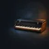
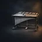

Pick an effect by what you hear
Find the sentence that describes your problem, and the effect next to it is where to start. Each link opens that effect's quick start. Instruments and sampled sounds are listed at the end.
To add an effect, select a Mixer insert and press Shift + F9 (or click Add effect). Add instruments from the Channel Rack's + Channel menu. New to effects? Add an effect walks you through the first one.
No matching plugins.
The tone is muddy, harsh or dull
The level jumps around
- CompressorLoud hits jump out of the mix, or the drums do not sound like one kit.
- FET CompressorA vocal or drum room should sound upfront and aggressive (the FET type of the Compressor).
- Vocal RiderSome words are much quieter than others.
- MultibandYou want the dense, bright, in-your-face sound: quiet details lifted, loud parts held.
- LimiterThe Master clips, or the song should be louder without going over a peak ceiling.
Two sounds fight each other
There is noise in the recording
It sounds dry, flat or narrow
- ReverbA voice or instrument sounds dry and close: put it in a room, hall or plate.
- DelayA part needs echoes that follow the beat, or a slapback.
- ChorusA guitar, synth or vocal sounds thin: thicken and widen it, or add a wobble.
- PhaserA pad or chord sits still: add a slow sweeping movement.
- StereoA sound is too narrow or too wide, or the low end should stay in the center.
The vocal is out of tune, or should sound different
You want a transition or a rhythmic trick
The song is finished and needs release loudness
Instruments
Sampled sounds
 Grand PianoYamaha C5 concert grand.
Grand PianoYamaha C5 concert grand. Upright PianoClose and woody acoustic piano.
Upright PianoClose and woody acoustic piano.- Wurlitzer EP200Reed piano with a raspy attack.
 Electric Grand CP80Glassy electric grand.
Electric Grand CP80Glassy electric grand.
Pianet TSoft plucked-reed piano. String SectionLayered violins, violas, and cellos.
String SectionLayered violins, violas, and cellos. Solo ViolinSingle bowed or plucked violin.
Solo ViolinSingle bowed or plucked violin. Concert HarpPlucked strings with a ringing tail.
Concert HarpPlucked strings with a ringing tail. Hollow Body GuitarClean Gretsch for picking and chords.
Hollow Body GuitarClean Gretsch for picking and chords. Jazz Club GuitarWarm Höfner archtop.
Jazz Club GuitarWarm Höfner archtop.
VibraphoneSoft mallet sound with a metallic tail.
You can also use your own VST3 and LV2 plugins: see Load third-party plugins.